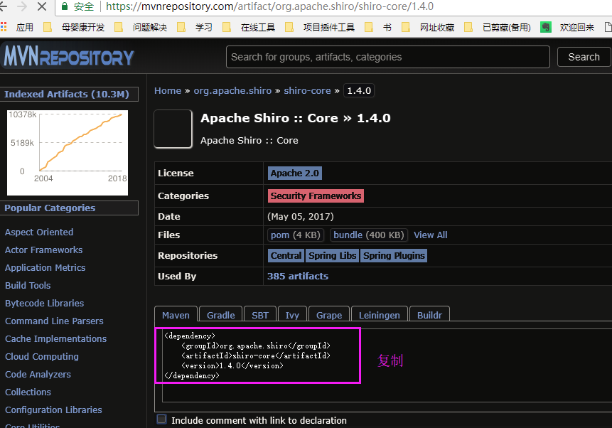
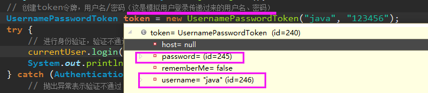
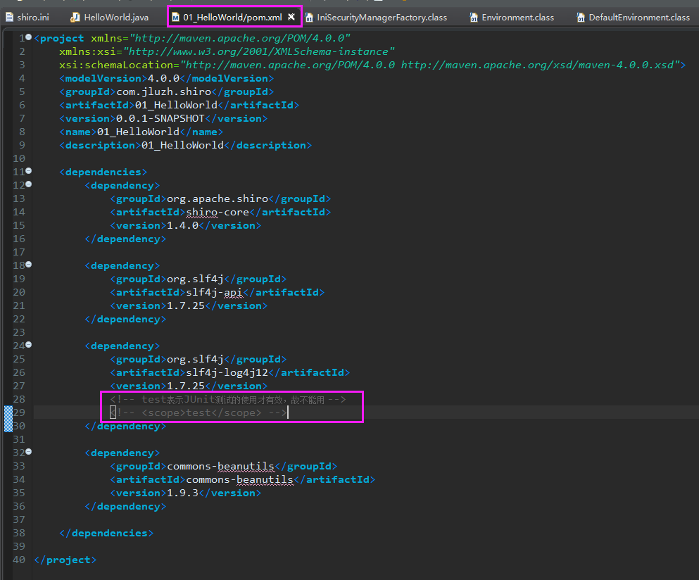
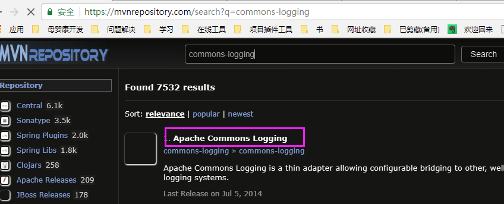
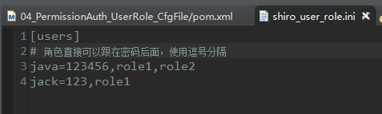
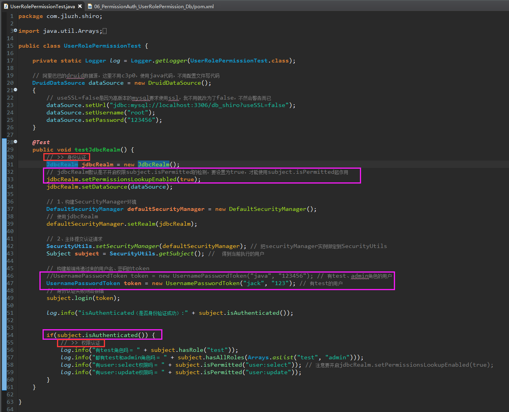
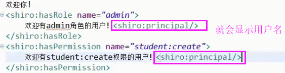
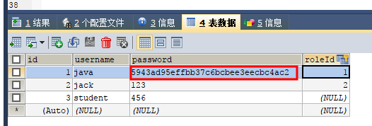

Shiro
参考：java1234 - 一头扎进系列
制作日期：2018-7-3 - 2018-7-7
制作人：小邹[yw_forgit@163.com]
注意：项目名称我改了，但是前面01这些标号没改
第一章 问候 Shiro 他大爷
1、Shiro简介
百度百科：Shiro
Apache Shiro是一个强大且易用的Java安全框架,执行身份验证、授权、密码学和会话管理。使用Shiro的易于理解的API,您可以快速、轻松地获得任何应用程序,从最小的移动应用程序到最大的网络和企业应用程序。
Shiro 官方主页：http://shiro.apache.org/download.html
2、HelloWorld
勾选下载jar包同时下载源码
更改全局工作空间的maven本地仓库（我改为我一直用的本地仓库，就不用都全部重新下载了）
搜索

暂时用配置文件来配置用户权限相关的信息，以后是会存入数据库的
HelloWorld.java
执行之后报错，是日志包缺了
缺commons-beanutils包（使用IniSecurityManagerFactory读取配置文件会用到）
终于不报错了，但是日志的配置还是有问题
先不管日志的问题，我们debug看下Shiro的执行

改一下登录密码

验证不通过，并且抛出异常
解决日志问题，生命周期不要用test即可

打印日志，再次运行
看一眼日志配置（这是在学Mybatis的时候第一次用的，不懂可以转移去了解）
第二章 身份认证
简单来说就是用户名和密码正确
1、Subject 认证主体
Subject 认证主体包含两个信息：
Principals：身份，可以是用户名，邮件，手机号码等等，用来标识一个登录主体身份；
Credentials：凭证，常见有密码，数字证书等等；
2、身份认证流程
login --> Security Manager --> Authenticator --> Realms
3、Realm
Realm：意思是域，Shiro 从 Realm 中获取验证数据；
Realm 有很多种类，例如常见的 jdbc realm(重点)，自定义realm，jndi realm，text realm（HelloWorld的shiro.ini就是这种）。
jdbc realm（方法1：配置文件配置数据源等）
c3p0数据源包
依赖

mysql驱动包
我没有用最新版的8.x版本的，最新版Driver驱动包的全名变了
创建数据库：
注意默认用户表的名字必须是users，字段必须有username、password（mysql是区分大小写的）


代码
执行JdbcRealmTest.java
看一眼源码，就知道为什么表名、字段名要有要求：
jdbc realm（方法二：java代码配置数据源）
Druid阿里巴巴的数据源
代码
执行单元测试
数据
数据库db_shiro的users表
同样看下，表为什么必须是users，字段必须是username、password
第三章 权限认证(授权)
简单来说就是验证成功的用户有什么权限
1、权限认证核心要素
权限认证，也就是访问控制，即在应用中控制谁能访问哪些资源。
在权限认证中，最核心的三个要素是：权限，角色和用户：
权限：即操作资源的权利，比如访问某个页面，以及对某个模块的数据的添加、修改、删除、查看的权利；
角色：是权限的集合，一中角色可以包含多种权限；
用户：在 Shiro 中，代表访问系统的用户，即 Subject；
2、授权
1）编程式授权
1.1 用户、角色、权限存储使用配置文件管理
1.1.1
基于角色的访问控制

执行
1.1.2
基于权限的访问控制
接着上面的环境修改

执行
1.2 用户、角色、权限存储使用数据库管理
数据库
表名、字段名要一致

代码

看一眼sql的查询方式

如果表名、字段名不是默认的，可以自己写sql语句
2）注解式授权
@RequiresAuthentication 要求当前 Subject 已经在当前的 session 中被验证通过才能被访问或调用。
@RequiresGuest 要求当前的 Subject 是一个"guest"，也就是说，他们必须是在之前的 session 中没有被验证或被记住才能被访问或调用。
@RequiresPermissions("account:create") 要求当前的 Subject 被允许一个或多个权限，以便执行注解的方法。
@RequiresRoles("administrator") 要求当前的 Subject 拥有所有指定的角色。如果他们没有，则该方法将不会被执行，而且 AuthorizationException 异常将会被抛出。
@RequiresUser RequiresUser 注解需要当前的 Subject 是一个应用程序用户才能被注解的类/实例/方法访问或调用。一个“应用程序用户”被定义为一个拥有已知身份，或在当前 session 中由于通过验证被确认，或者在之前 session 中的'RememberMe'服务被记住。
3、Permissions 对权限深入理解
单个权限 query
单个资源多个权限 user:query user:add （或user:query,add）
单个资源所有权限 user:query,add,update,delete （或user:*）
所有资源某个权限 *:view （只是view权限）
实例级别的权限控制（不常用）
单个实例的单个权限 printer:query:lp7200 printer:print:epsoncolor
所有实例的单个权限 printer:print:*
所有实例的所有权限 printer:*:*
单个实例的所有权限 printer:*:lp7200
单个实例的多个权限 printer:query,print:lp7200
4、授权流程
.isPermitted*/hasRole* --> Security Manager --> Authorizer --> Realms
第四章 集成 Web
1、Shiro 集成 Web 配置
web.xml的主要配置：
<!-- shiro1.2以及以上版本的配置 -->
<!-- 环境加载监听器 -->
<listener>
<listener-class>org.apache.shiro.web.env.EnvironmentLoaderListener</listener-class>
</listener>
<!-- 配置文件的路径，默认是/WEB-INF/shiro.ini
-->
<context-param>
<param-name>shiroConfigLocations</param-name>
<param-value>/WEB-INF/shiro.ini</param-value>
</context-param>
<!-- web请求过滤器。 所有请求都会被ShiroFilter拦截 -->
<filter>
<filter-name>ShiroFilter</filter-name>
<filter-class>org.apache.shiro.web.servlet.ShiroFilter</filter-class>
</filter>
<!-- 过滤器的拦截映射。 /* 表示都拦截 -->
<filter-mapping>
<filter-name>ShiroFilter</filter-name>
<url-pattern>/*</url-pattern>
</filter-mapping>
1）创建Maven webapp项目
J2SE-1.5只有一个资源目录
改高版本即可
2）加入jar
3）建立动态web项目，复制东西
把一个META-INF文件夹、web.xml拿走，放到我们的项目里面，项目原来的web.xml太旧了
拿完如图，然后Test项目就可以删除了
注意哈，1.2以及更高版本的配置与1.1以及更低版本的配置不一样，我这里用1.4。
4）重点、测试
测试认证
用户账号
写好项目之后，运行，打开login.jsp
认证失败，抛异常
换一个有账号的

测试urls配置
shiro.ini配置文件使用Filter（这些Filter都是在shiro-web-x.x.x.jar里面）
|
Filter Name |
Class |
|
anon |
|
|
authc |
|
|
authcBasic |
org.apache.shiro.web.filter.authc.BasicHttpAuthenticationFilter |
|
logout |
|
|
noSessionCreation |
|
|
perms |
org.apache.shiro.web.filter.authz.PermissionsAuthorizationFilter |
|
port |
|
|
rest |
org.apache.shiro.web.filter.authz.HttpMethodPermissionFilter |
|
roles |
|
|
ssl |
|
|
user |
下面测试一下/admin请求如果没有身份认证成功会跳到login.jsp，如果身份认证成功了就会到AdminServlet类的方法，打印一句话。
看一下配置，/admin是要身份认证，没有认证的都会到login.jsp
访问/admin
没有登录过也就是没有身份认证，就会跳转到login请求
登录一下
然后再请求/admin
底层做法都是在登录的时候把用户信息存入session，然后再请求/admin就能访问了，否则就是回到login.jsp进行登录
roles、perms使用
看下这两个Filter
|
roles |
|
|
perms |
org.apache.shiro.web.filter.authz.PermissionsAuthorizationFilter |
下图源码，可以看到都继承AuthorizationFilter，所以roles与perms都有unauthorizedUrl属性，unauthorizedUrl表示角色认证或者权限认证不通过会跳转到哪个url
故配置文件可以这样配置roles、perms
然后在urls配置一个url（/student）
访问/student
跳到登录了
a）用没有权限的登录
然后再访问
跳转提示没有权限
b）换有权限的登录
再访问/student
没有返回角色认证失败的页面了，说明有权限访问，404只是我没有写/student请求。
5）完整代码
访问/login请求会来到LoginServlet
请求/admin会进入AdminServlet
2、Shiro 集成 Web 具体使用
Url 匹配方式：
? 匹配一个字符
eg：/admin? 可以匹配 /admin1 /admin2
但是不能匹配 /admin12 /admin
* 匹配零个或者一个或者多个字符
eg：/admin* 可以匹配 /admin /admin1 /admin12
但是不能匹配 /admin/abc （这个是多路径了）
** 匹配零个或者多个路径
eg：/admin/** 可以匹配/admin /admin/a /admin/a/b
但是/admin12不能匹配
这个匹配比较重要，但是上面已经说明了，这里就简单测试一下，理解一下好了。
配置文件
访问/admin
能跳转到/login，都是能匹配上的
下面都是可以匹配的，不一一截图
3、Shiro 标签使用
Jsp 标签授权
<%@ taglib
prefix="shiro" uri="http://shiro.apache.org/tags" %>
Guest 标签：用户没有身份验证时显示相应信息，即游客访问信息；
User 标签：用户已经身份验证/记住我登录后显示相应的信息；
Authenticated 标签：用户已经身份验证通过，即 Subject.login 登录成功，不是记住我登录的。
notAuthenticated 标签：用户没有身份验证通过，即没有调用 Subject.login 进行登录，包括记住我自动登录的也属于未进行身份验证。
principal 标签 显示用户身份信息，默认调用 Subject.getPrincipal()获取，即 Primary Principal。
hasRole 标签 如果当前 Subject 有角色将显示 body 体内容。
lacksRole 标签 如果当前 Subject 没有角色将显示 body 体内容。
hasAnyRoles 标签 如果当前 Subject 有任意一个角色（或的关系）将显示 body 体内容。
hasPermission 标签 如果当前 Subject 有权限将显示 body 体内容。
lacksPermission 标签 如果当前 Subject 没有权限将显示 body 体内容。
看下怎么写就行，我没有做测试，这是教程里面的测试。
角色
没有admin角色的用户登录
有admin角色的用户登录
权限
有权限的用户登录
用户身份信息

4、Shiro 会话(Session)机制
直接用Servlet底层的容器的会话机制即可，默认也是这个，但是Shiro也有自己的会话机制，有兴趣可以了解一下。
底层也是Servlet的实现
5、自定义 Realm
接着上一个环境
创建表
外键：
t_user与t_role是一对多，t_role与t_permission是一对多
从shiro.ini把数据移过来
在三个地方打了断点，看看shiro执行的过程
先用错误的账号登录
doGetAuthenticationInfo方法(身份认证)是在subject.login(token);方法里面调用的，看图

来到这里，user是空的，就是authenticationInfo没有返回，所以后面会报错
提示没有该账号

然后打印日志

用户名对，密码错的，流程是一样的，只是报的错不一样
密码错误，报错
然后打印日志

一个正确的用户名、密码
不报错
然后访问需要权限的url地址
看下配置
debug可以看到，doGetAuthorizationInfo方法(权限认证/授权)直接被调用了，此时subject.login(token);方法和doGetAuthenticationInfo 方法(身份认证)都没有调用，说明身份认证成功之后，请求其他url，shiro是从session获取身份信息，然后再进行授权，无需重新身份认证。
404说明有权限（因为super请求我没有实现），没有权限会跳转到提示没有权限的页面
然后再一次请求super
shiro会重新授权，就是说身份认证只有一次（不过期的话），但是每次请求需要权限的url，都是会重新给该用户授权的，也就是每次都会从数据库获取数据，这个性能低呀，为什么不能存入session里面呢，是为了实时能获取最新改动的角色、权限吗？
角色授权与权限授权一样的流程。
注意哈，登录成功之后，想换用户，就要重启程序了，不然还是会用原来那个账户，因为退出没有做。
第五章 加密
其实可以自己封装，但是shiro把他们封装的比较好用点。
1、shiro 加密解密
2、shiro 加密应用
把数据库的密码改为md5双重加密的密码，密码长度不够的话要改表

然后把密码加密之后再传递给shiro，就这么简单
第六章 Shiro 支持特性
1、Web 支持
2、缓存支持
3、并发支持
4、测试支持
5、“RunAs ”支持
在一些场景中，比如某个领导因为一些原因不能进行登录网站进行一些操作，他想把他网站上的工作委托给他的秘书，但是他不想把帐号、密码告诉他秘书，只是想把工作委托给他；此时和我们可以使用 Shiro 的 RunAs 功能，即允许一个用户假装为另一个用户（如果他们允许）的身份进行访问。
6、“Remember Me ”支持
将登录信息存入浏览器端的cookie，据说登录成功之后要重启浏览器，再测试，才能看到记住我为true
第七章 Shiro整合Spring、SpringMvc、Mybatis等
官方文档：http://shiro.apache.org/spring.html
请转移到Mybatis教程去